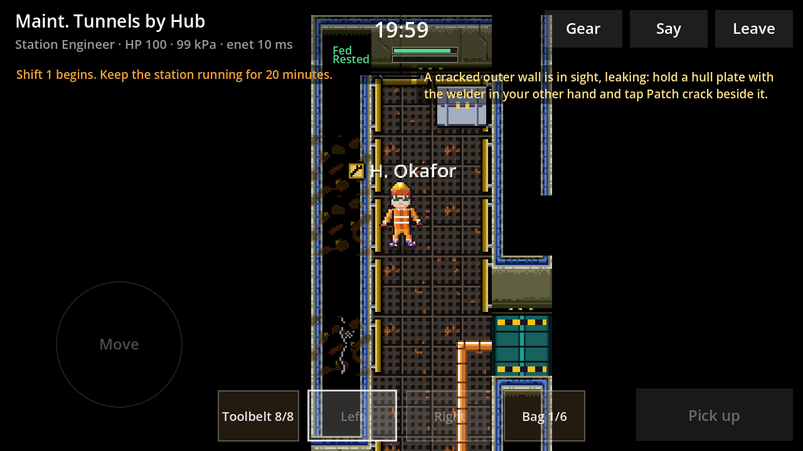
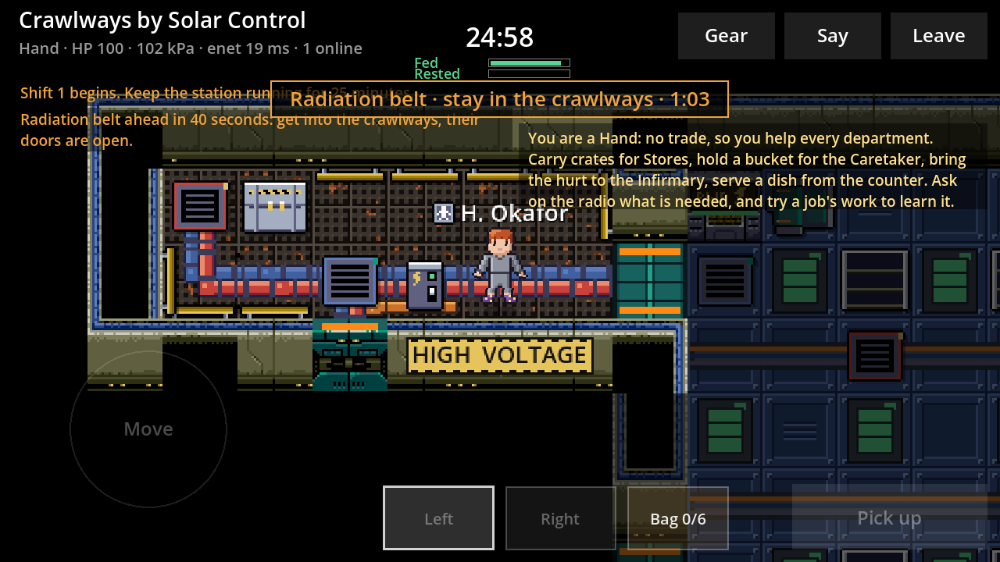
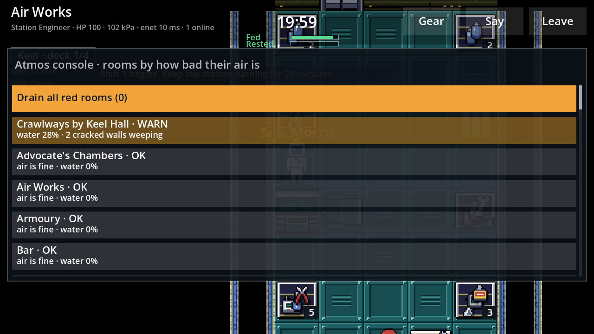
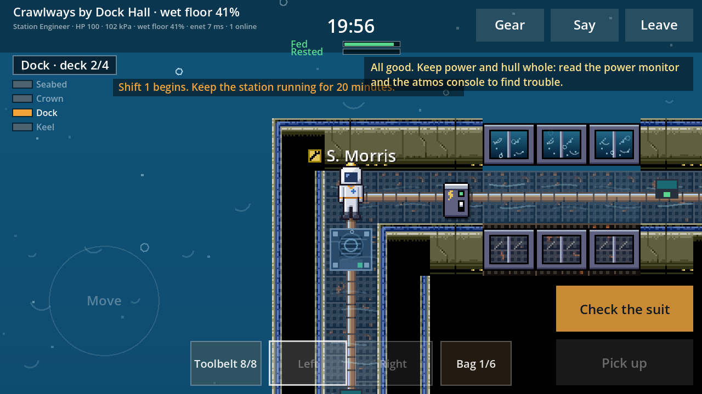
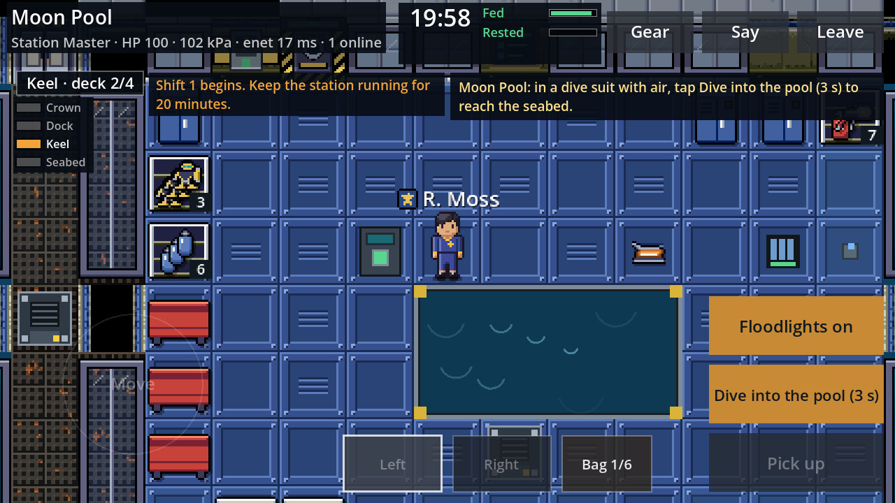

Incidents
Every shift brings 2 incidents plus one for every 3 people on it. The station announces some on the radio; the end-of-shift summary shows how long each took to fix.
There is no fuel on the station: its power is solar only. What goes wrong is wear, in the hull and in the power plant.
Hull wear
Dust and heat eat at the outer walls all shift. A wall goes worn (a stain), then cracked (a small leak), and a crack nobody mends opens to space.
 Worn
Worn Cracked
Cracked- Hole
Plating erosion
Dust and heat eat at one outer wall and the walls beside it: the plating there goes thin (a stain on the wall), then cracks and leaks a little air, and with no one to mend it opens to space, the room losing its air within seconds.
Fix: Look at the outer walls (or carry a thickness gauge). An engineer reinforces a worn wall with the welder alone, and patches a cracked one with a hull plate and the welder. A hole is patched the same way; an air tank in the EVA suit's storage keeps them breathing inside. If the doors are sealed, a crowbar forces one open (Storekeeper does it fastest). Once the hole is patched the room's vents refill it.
On Millrace: Look at the outer walls (or carry a thickness gauge). An engineer reinforces a worn wall with the welder alone, and patches a cracked one with a hull plate and the welder. A hole is patched the same way; a dive suit with a tank in its storage keeps them breathing in a full room. If the doors are sealed, a crowbar forces one open (Storekeeper does it fastest). Once the hole is patched, put the room in Drain.
Worn plating gave way
A cracked outer wall that nobody mended opened to space: the room loses its air within seconds and the pressure lock seals its doors.
Fix: A hull plate with a welder in the other hand patches the hole; an EVA suit's air tank keeps the repairer breathing.
On Millrace: A hull plate with a welder in the other hand patches the hole; the tank in a dive suit keeps the repairer breathing in the full room.



Power fault
Power fault
A cable near a room's power panel fails: the room is cut off and goes dark, and its doors, vents and consoles stop working.
Fix: Find the gap in the cable line near the room's panel (a fault is always where cable lies open: in a crawlway or under a lifted floor tile) and lay cable over it with a cable coil.
Radiation belt
A shift of the normal length crosses a radiation belt at most once, at a random moment after the first 4 minutes. Time added by a Continue vote may bring another, never within 8 minutes of the last one.
The radio warns 40 seconds ahead: get into the crawlways, whose doors open to everyone and blink orange. The belt lasts 60 to 90 seconds. Whoever is not sheltered loses 3 health every 3.5 s; the tunnels and the EVA pods are safe, the rooms, the hall and the truss are not. A few hull walls wear while it lasts. After the belt the radio says so, and the doors go back to their access 120 seconds later.

Under the sea: Millrace Station
On the underwater stations the sea has three events of its own, which share the shift with plating erosion and the power fault. None is announced on the radio or the screen: the atmos console, the survey board, the turbine consoles and what you see are how you find out. The deeper a wall lies, the harder the sea pushes through it: on Millrace the Keel is the deepest deck (18 metres) and each deck up is 3 metres shallower, the Crown at 12. See How to play for the pumps.
Hull seep
Two or three outer walls of the deepest part of a water station crack and weep: the sea comes in slowly there, harder the deeper the wall lies (a wall at 30 m lets in twice what one at 15 m does), and the water of those rooms creeps up. Nothing is announced: the atmos console lists each room's water and its cracked walls, the survey board counts them by room, and a thickness gauge shows them wall by wall.
Fix: An engineer patches each cracked wall with a hull plate and the welder, then puts the room in Drain (at its air alarm or at the atmos console): the bilge pumps take the water out.
Current surge
The sea runs flat out for about 45 seconds and tears marine growth and silt into one or two rotor fields: every rotor there is fouled, and one has its seal weeping and its bearing hurt. A weeping seal wets the field's converter until it trips on a ground fault. Nothing is announced: the turbine consoles say SURGE, then show the fouling, the moisture and the trip.
Fix: A diver scrapes the fouled rotors with a rotor brush and fits a new bearing and a new seal in the hard-hit rotor (parts from the lathe); an engineer resets the converter with a multitool once its moisture is down.
Pressure breach
A wall of a room that has bilge pumps cracks and strains under the pressure. A minute or so later, unless somebody has mended it, it gives way: the room floods, and the silt that comes in jams the room's pumps. Nothing is announced: the atmos console shows the straining wall, a thickness gauge the crack.
Fix: Patch or reinforce the wall before it goes (a hull plate and the welder). If it has gone: patch the hole, clear each jammed pump with a wrench, then put the room in Drain.





Developing faults
Parts of the solar plant wear out slowly: a fault develops over minutes (a part runs hotter, gives less, and only then fails), and nothing is announced on the radio. The consoles in Solar Control show it as it grows. Nothing starts in the first 150 seconds or the last 4 minutes of a shift, and no more than 3 parts are in trouble at once. A 25-minute shift sees two to four. See the Power part of How to play for the repairs.
- A controller's vents are clogging. (common)
- A controller's terminals are wearing.
- A battery cell is starting to fail. (common)
- An inverter fan is wearing out. (common)
- An inverter module's capacitors are ageing.
- The transformer's winding is ageing. (common)
- A load on a feeder is starting to leak. (common)
- A solar panel is starting to crack. (common)
- An array's bolts are working loose.
- An array's tracking joint is wearing.